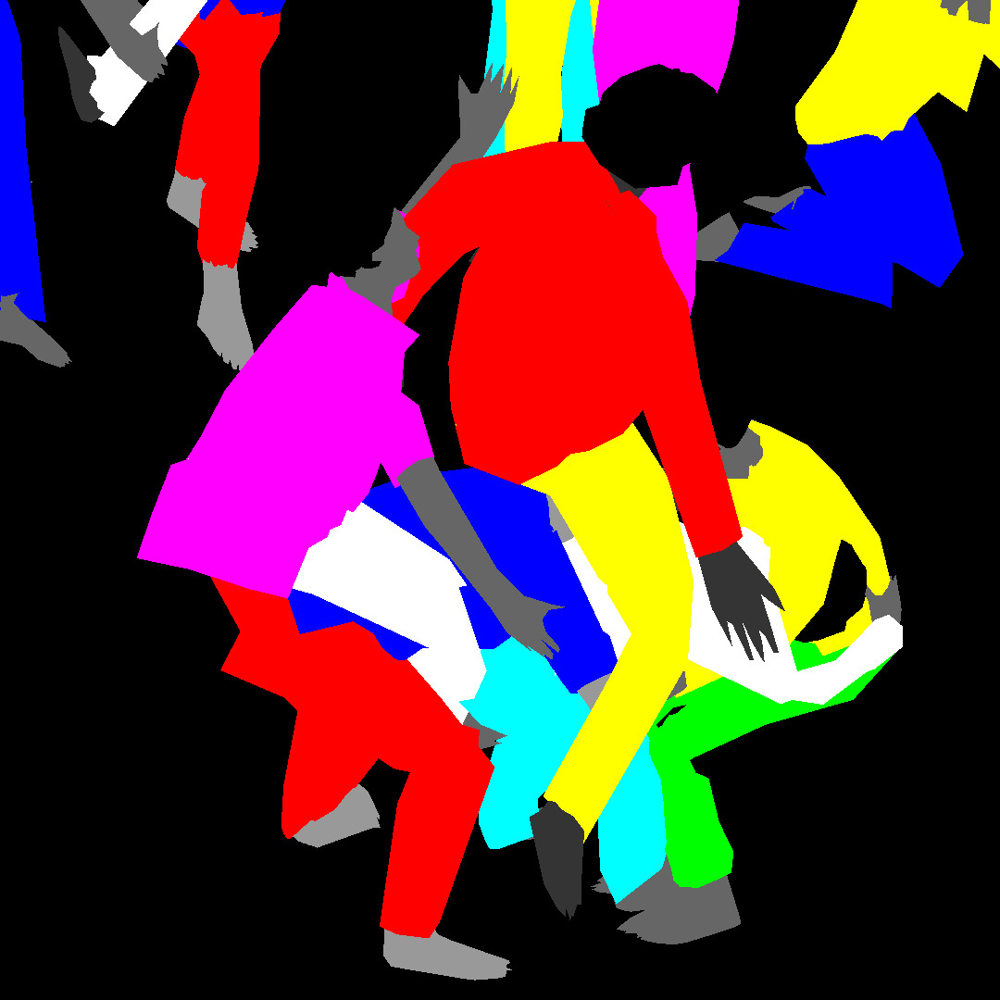
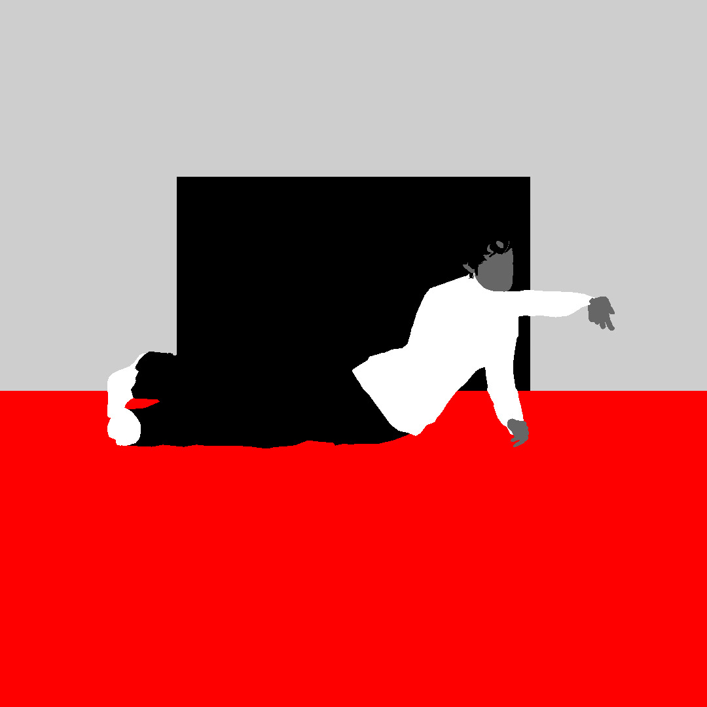
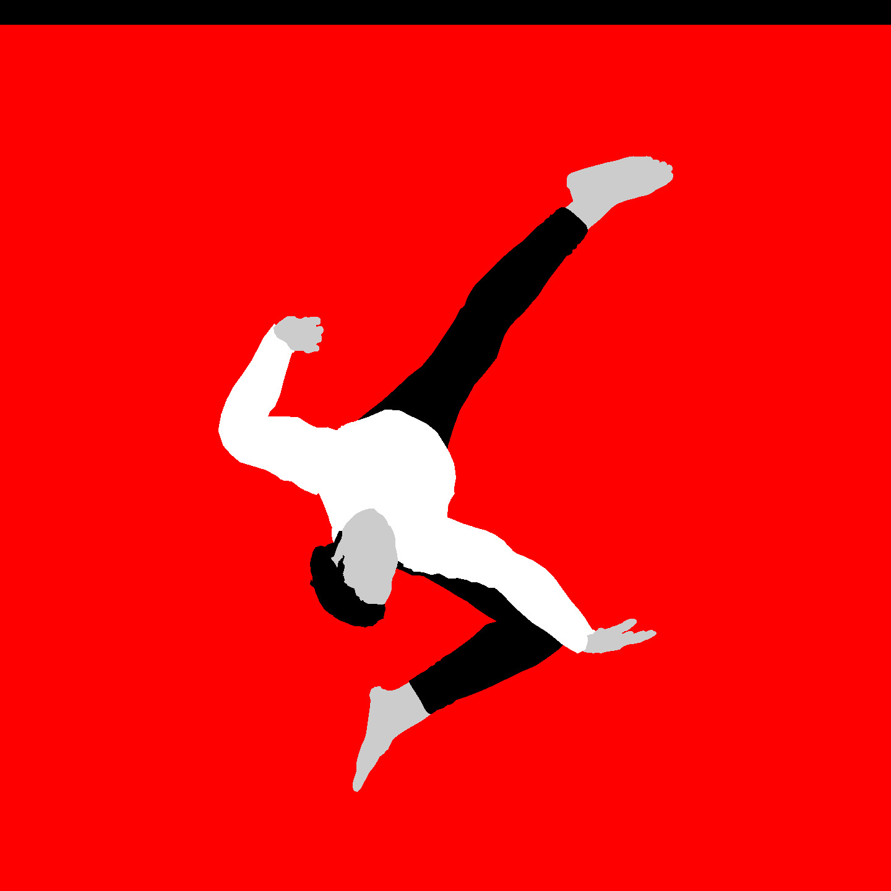
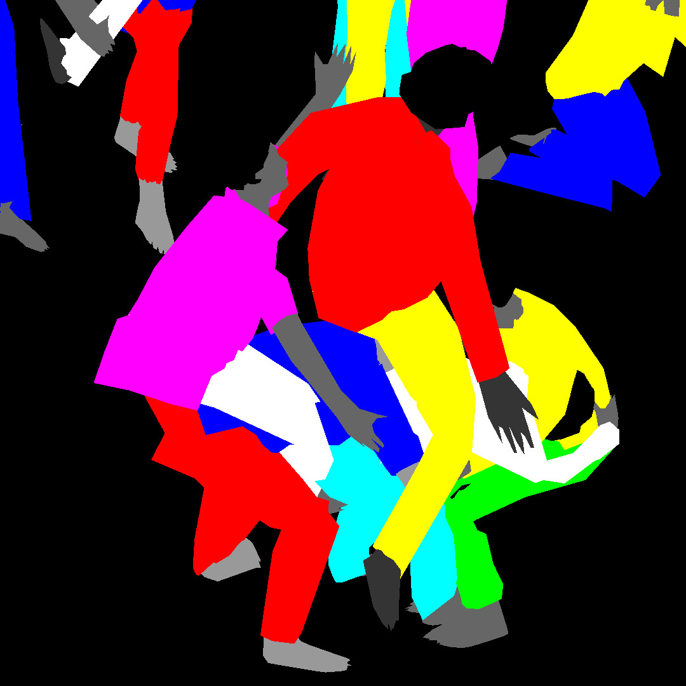
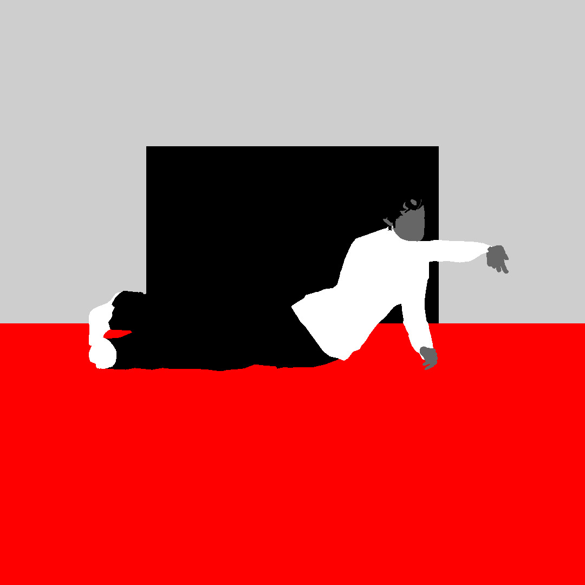
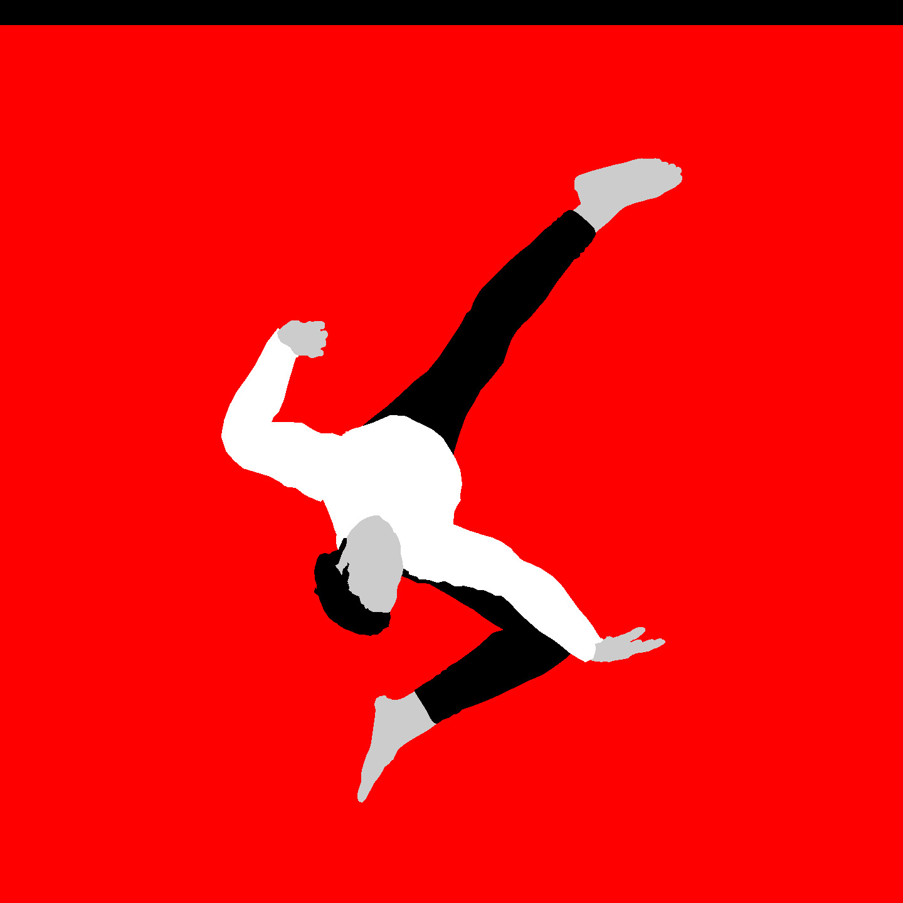

IRL SHOW
ONLINE SHOW
 





“I saw that the basis of color was its instability.” (Bridget Riley, 1967)
This is RESPONSIVE EYE - a multimedia exhibition by Peter Burr. The works in this show play with a number of perceptual illusions that highlight uncertainties and gaps in our awareness. It comprises 3 concurrent installations: PEOPLE, KID GAMES, AND THE INFINITE IRL at Telematic Media Arts; BLACK SQUARE IRL at Minnesota Street Project’s Black Box Gallery; and the online-only exhibit THE SHAPE OF EMPTY SPACE presented here.
Go to tttelematiccc.com to see the online event schedule and to arrange an IRL viewing while the exhibition is live from January 15, 2021 to March 27, 2021.
This work was built for real space, 3-dimensional and unstable.
Here, that space recedes in a flat surface for your touch. Click around.
If you are in the area, go to tttelematiccc.com to arrange an IRL viewing.
WALKTHRU is a visualization of PEOPLE, KID GAMES, AND THE INFINITE installed at Telematic Media Arts in January, 2021. To view the full animated walkthru go to archive.org. Artworks in order of appearance: AB BODY, PEOPLE, and KID GAMES.
To view the full installation in 3-dimensional space go to tttelematiccc.com and schedule an appointment.
A B BODY is a collection of screen-based portraits assembled in a 3x3 vertical matrix. Brightly-hued avatars contort at the bounds of their bodily limitation in endless loops. This dance is bisected by a pair of opposing boxes, restraining the actors in recursive black and white lines. The title refers to the Attentional Blink (AB) phenomena - a threshold where humans fail to perceive rapid-fire visual information. The blindness that occurs during this speed-death can sometimes be short-circuited by charging the information with salient emotional features.
To view the full installation go to tttelematiccc.com and schedule an appointment.
Technical direction by Oren Shoham with support from Infinite Objects.
PEOPLE is a computational artwork that runs for the duration of a workday. In this iteration, a building-sized projection fills a single wall and 2.1-channel generative audio permeates the exhibition interior. It pictoralizes a vacant landscape slowly filling with a mob of multi-colored avatars. This performance, in the spirit of the lemmings concept, grows a speckled stalagmite of digital bodies over the course of its 6 hours.
To view the full installation go to tttelematiccc.com and schedule an appointment.
Technical direction by Oren Shoham with sound design by Stefan Alexandrej Cvitanic.
KID GAMES is an augmented reality work inside the gridded corner of a room with an arrangement of white tiles reminiscent of the abstract strategy game GO. Through the lens of a portable tablet, a 3-dimensional reconstruction of the Pieter Bruegel the Elder's painting “Kinderspiele” surfaces. In this 16th century tableaux, hundreds of adult-looking children absorb themselves in many foolish games. On the outskirts of this historical reconstruction, a solitary figure listlessly explores the area beyond its bounds.
To view the full installation go to tttelematiccc.com and schedule an appointment.
Technical Direction by Amay Kataria.
BLACK SQUARE is a short film playing every 10 minutes in a black box satellite gallery at Minnesota Street Project. It animates a philosophy of perception through an assault of optical illusions, highlighting limitations of your body and mind. An assembly of human figures writhe and squares strobe in rhythm to audio sampled from the opening of the 1965 Op Art exhibition "The Responsive Eye". Through the friction of this contrast, a portrait emerges of an anxious divided society pushing at the boundaries of our teetering attention.
To view the full installation go to tttelematiccc.com and schedule an appointment.
Technical Direction by Oren Shoham.
A GATHERING OF TWO is a multimedia artwork exploring tonal psychophysics. It is comprised of a 3-color screenprint with film positive overlays, framed and wall-mounted. It manifests phenomena explored in BLACK SQUARE through this print material, highlighting the flatness and opacity of its mechanically fabricated features.
To view the full installation go to tttelematiccc.com and schedule an appointment.